يحيى بن شرف النووي
Author
About the author
النَّوَوِي (٦٣١ - ٦٧٦ هـ = ١٢٣٣ - ١٢٧٧ م)
علامة بالفقه والحديث. مولده ووفاته في نوا (من قرى حوران، بسورية) وإليها نسبته. تعلم في دمشق، وأقام بها زمنا طويلا.
(من كتبه)
• تهذيب الأسماء واللغات - ط
• منهاج الطالبين - ط
• الدقائق - ط
• تصحيح التنبيه - ط في فقه الشافعية رأيت مخطوطة قديمة منه باسم التنبيه على ما في التنبيه
• المنهاج في شرح صحيح مسلم - ط خمس مجلدات
• التقريب والتيسير - ط في مصطلح الحديث
• حلية الأبرار - ط يعرف بالأذكار النووية
• خلاصة الأحكام من مهمات السنن وقواعد الإسلام - خ [طُبع]
• ورياض الصالحين من كلام سيد المرسلين - ط
• بستان العارفين - ط
• الإيضاح - ط في المناسك
• شرح المهذب للشيرازي - ط
• روضة الطالبين - خ فقه [طُبع]
• والتبيان في آداب حملة القرآن - ط
• المقاصد - ط رسالة في التوحيد
• مختصر طبقات الشافعية لابن الصلاح - خ
• مناقب الشافعيّ - خ
• المنثورات - ط فقه، وهو كتاب فتاويه
• مختصر التبيان - خ مواعظ، والأصل له
• منار الهدى - ط في الوقف والابتداء، تجويد
• الإشارات إلى بيان أسماء المبهمات - ط رسالة
• الأربعون حديثا النووية - ط شرحها كثيرون.
• وأفردت ترجمته في رسائل، إحداها للسحيمي، والثانية للسخاوي، والثالثة «المنهاج السوي» للسيوطي مخطوطتان، والثالثة للسخاوي مطبوعة (أفادنا بها عبيد)
• وفي طبقات ابن قاضي شهبة: قال الإسنوي: وينسب إليه تصنيفان ليسا له، أحداهما مختصر لطيف يسمى «النهاية في اختصار الغاية - خ» في الظاهرية، والثاني «أغاليط على الوسيط» مشتملة على خمسين موضعا فقهية وبعضها حديثية، وممن نسب إليه هذا «ابن الرفعة» في شرح الوسيط، فاحذره، فإنه لبعض الحمويين، ولهذا لم يذكره ابن العطار تلميذه حين عدد تصانيفه واستوعبها.
• وأورد ابن مرعي، في «الفتوحات الوهبية» نسبه كاملا، وقال: مرّي، بضم الميم وكسر الراء، كما وجد مضبوطا بخطه، والحزامي: بكسر الحاء المهملة، وبالزاي المعجمة، والنووي: نسبة لنوا، يجوز كتبها بالألف: «نواوي» قلت: كان يكتبها هو بغير الألف، انظر نموذج خطه (١).
_________
(١) طبقات الشافعية للسبكي ٥: ١٦٥ وطبقات الشافعية لابن قاضي شهبة - خ. والنعيمي ١: ٢٤ وفيه: وفاته سنة ٦٧٧ والنجوم الزاهرة ٧: ٢٧٨ و Brock ١: ٤٦٩ (٣٩٤) S ١: ٦٨٠ وآداب اللغة ٣: ٢٤٢ والتبيان - خ. ومفتاح السعادة ١: ٣٩٨ والتيمورية ٣: ٣٠٧ وهادي المسترشدين ٤٧١ و ٢٤٨ Huart وابن الفرات ٧: ١٠٨ والآصفية ١: ٥٢١ و ٢: ١٣٨، ٢٣٠ و Bankipore ١٣: ٨٠ والفتوحات الوهبية لإبراهيم بن مرعي الشبرخيتي.
نقلا عن: «الأعلام» للزركلي [مع إضافات بين معقوفين]
- آداب الفتوى والمفتي والمستفتي
- إرشاد طلاب الحقائق إلى معرفة سنن خير الخلائق صلى الله عليه وسلم
- الأذكار للنووي ت الأرنؤوط
- الأذكار للنووي ت مستو
- الأذكار للنووي ط ابن حزم
- الأربعون النووية
- الأربعون النووية مع زيادات ابن رجب
- الأصول والضوابط
- الإيجاز في شرح سنن أبي داود - النووي
- الإيضاح في مناسك الحج والعمرة
- التبيان في آداب حملة القرآن
- التقريب والتيسير للنووي
- المجموع شرح المهذب - ط المنيرية
- بستان العارفين للنووي
- تحرير ألفاظ التنبيه
- تحقيق رياض الصالحين للألباني
- تهذيب الأسماء واللغات
- جزء فيه ذكر اعتقاد السلف في الحروف والأصوات
- خلاصة الأحكام
- دقائق المنهاج
- روضة الطالبين وعمدة المفتين
- رياض الصالحين - ت الرسالة الثاني
- رياض الصالحين - ت الفحل
- شرح النووي على مسلم
- فتاوى النووي
- منهاج الطالبين وعمدة المفتين في الفقه
Books
|
Book
|
Pages
|
|---|---|
| رياض الصالحين - ت الرسالة الثاني | 810 |
| الأربعون النووية | 81 |
Resources
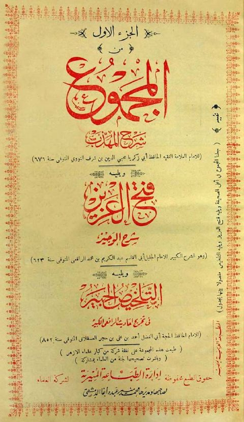
المجموع شرح المهذب النووي ويليه الشرح الكبير للرافعي ويليه تلخيص الحبير لابن حجر المجموع شرح المهذب النووي ويليه الشرح الكبير للرافعي ويليه تلخيص الحبير لابن حجر يحيى بن شرف النووي • عبد الكريم بن محمد الرافعي • أحمد بن علي بن حجر العسقلاني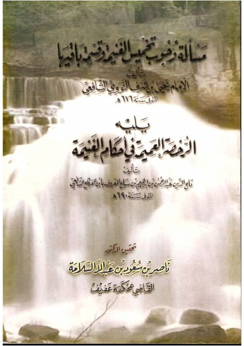
مسألة وجوب تخميس الغنيمة وقسمة باقيها يليه الرخصة العميمة في أحكام الغنيمة مسألة وجوب تخميس الغنيمة وقسمة باقيها يليه الرخصة العميمة في أحكام الغنيمة يحيى بن شرف النووي • ابن الفركاح الشافعي الأصول والضوابط
الأصول والضوابط
يحيى بن شرف النووي
الأصول والضوابط
الأصول والضوابط
يحيى بن شرف النووي
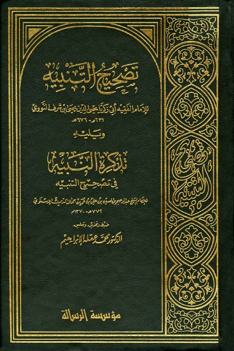
تصحيح التنبيه للنووي ويليه تذكرة النبيه للإسنوي تصحيح التنبيه للنووي ويليه تذكرة النبيه للإسنوي يحيى بن شرف النووي • عبد الرحيم جمال الدين الإسنوي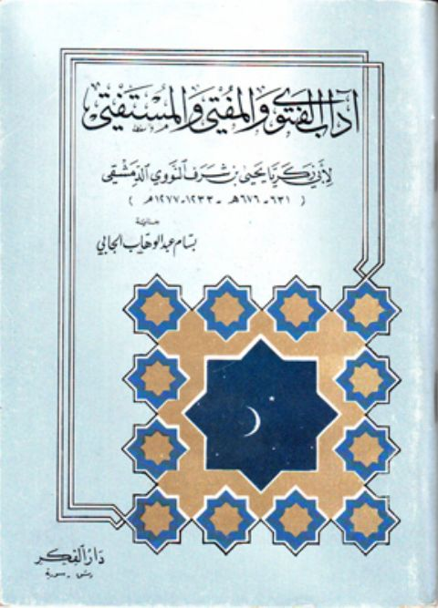
آداب الفتوى والمفتي والمستفتي- دار الفكر آداب الفتوى والمفتي والمستفتي- دار الفكر يحيى بن شرف النووي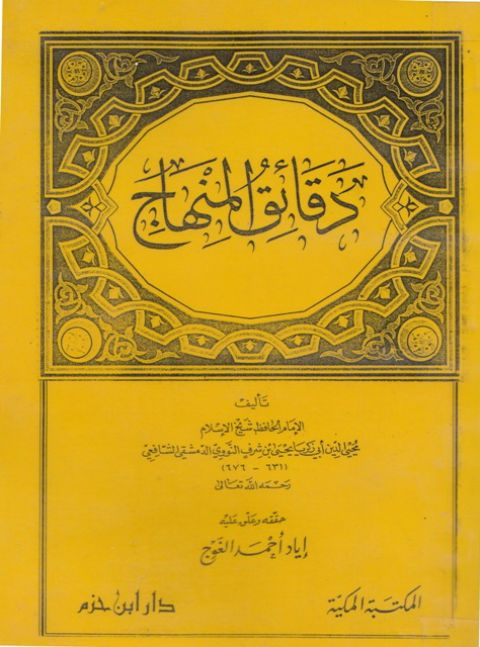
دقائق المنهاج دقائق المنهاج يحيى بن شرف النووي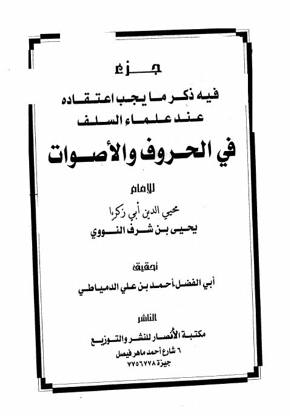
جزء فيه ذكر ما يجب اعتقاده عند علماء السلف في الحروف والأصوات جزء فيه ذكر ما يجب اعتقاده عند علماء السلف في الحروف والأصوات يحيى بن شرف النووي رياض الصالحين- ت. الألباني
رياض الصالحين- ت. الألباني
يحيى بن شرف النووي
رياض الصالحين- ت. الألباني
رياض الصالحين- ت. الألباني
يحيى بن شرف النووي
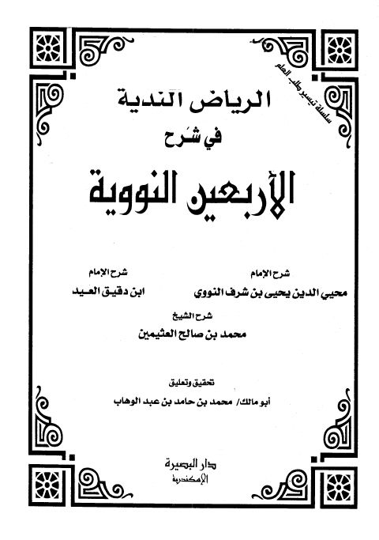
الرياض الندية في شرح الأربعين النووية الرياض الندية في شرح الأربعين النووية يحيى بن شرف النووي • ابن دقيق العيد • محمد بن صالح العثيمين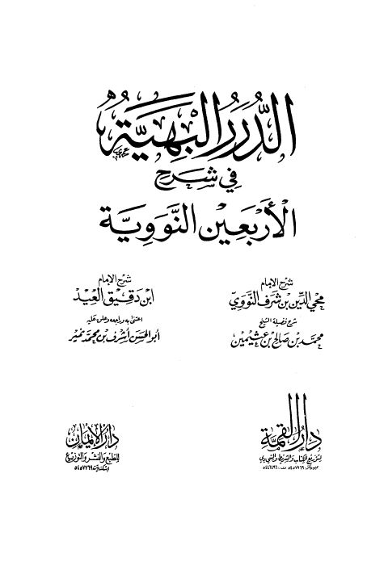
الدرر البهية في شرح الأربعين النووية الدرر البهية في شرح الأربعين النووية يحيى بن شرف النووي • ابن دقيق العيد • محمد بن صالح العثيمين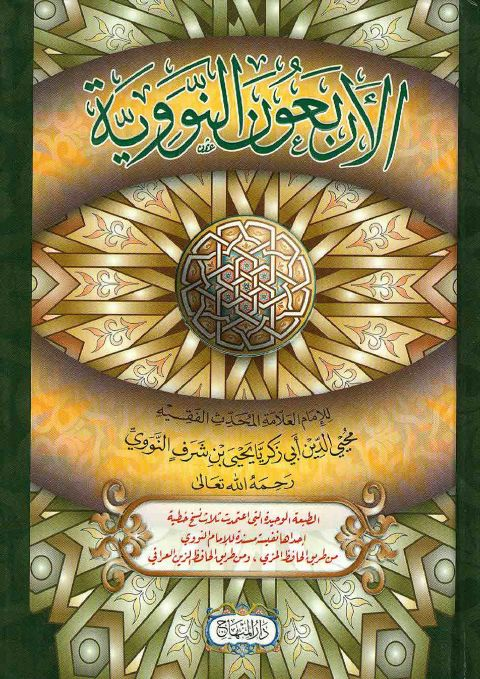
الأربعون النووية الأربعون النووية يحيى بن شرف النووي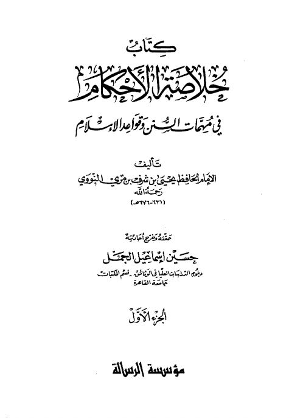
خلاصة الأحكام في مهمات السنن وقواعد الإسلام خلاصة الأحكام في مهمات السنن وقواعد الإسلام يحيى بن شرف النووي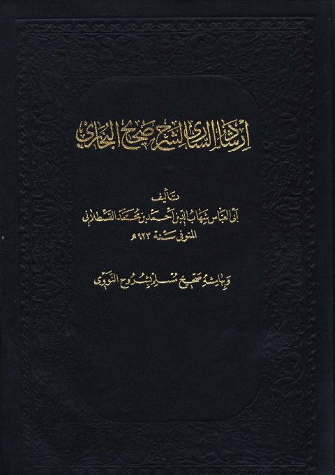
إرشاد الساري لشرح صحيح البخاري وبهامشه شروح مسلم للنووي- ط بولاق إرشاد الساري لشرح صحيح البخاري وبهامشه شروح مسلم للنووي- ط بولاق أحمد بن محمد بن أبي بكر القسطلاني • يحيى بن شرف النووي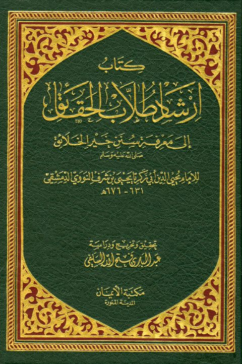
إرشاد طلاب الحقائق إلى معرفة سنن خير الخلائق إرشاد طلاب الحقائق إلى معرفة سنن خير الخلائق يحيى بن شرف النووي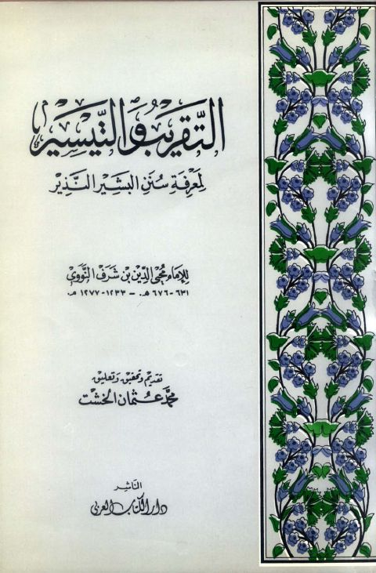
التقريب والتيسير لمعرفة سنن البشير النذير- ت. الخشت التقريب والتيسير لمعرفة سنن البشير النذير- ت. الخشت يحيى بن شرف النووي رياض الصالحين- المكتب الإسلامي
رياض الصالحين- المكتب الإسلامي
يحيى بن شرف النووي
رياض الصالحين- المكتب الإسلامي
رياض الصالحين- المكتب الإسلامي
يحيى بن شرف النووي
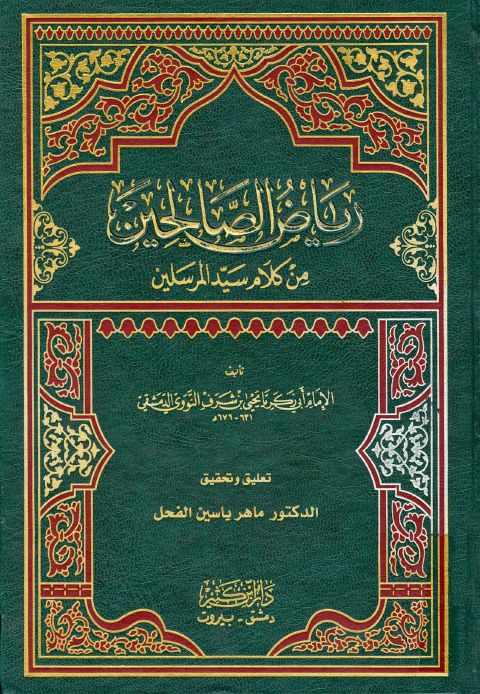
رياض الصالحين- ت. ماهر الفحل رياض الصالحين- ت. ماهر الفحل يحيى بن شرف النووي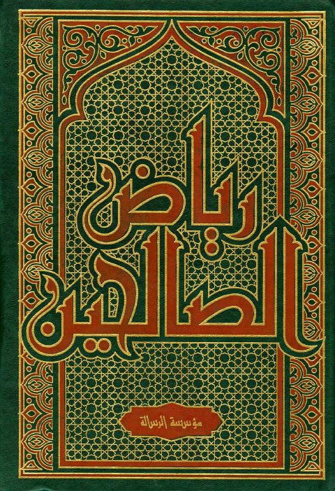
رياض الصالحين- ت. الأرناؤوط رياض الصالحين- ت. الأرناؤوط يحيى بن شرف النووي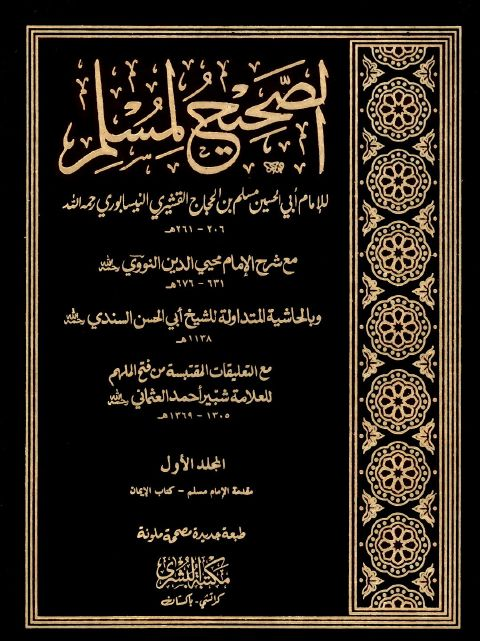
صحيح مسلم مع شرحه المنهاج للنووي- ط كراتشي ملونة صحيح مسلم مع شرحه المنهاج للنووي- ط كراتشي ملونة مسلم بن الحجاج القشيري النيسابوري • النووي • السندي • شبير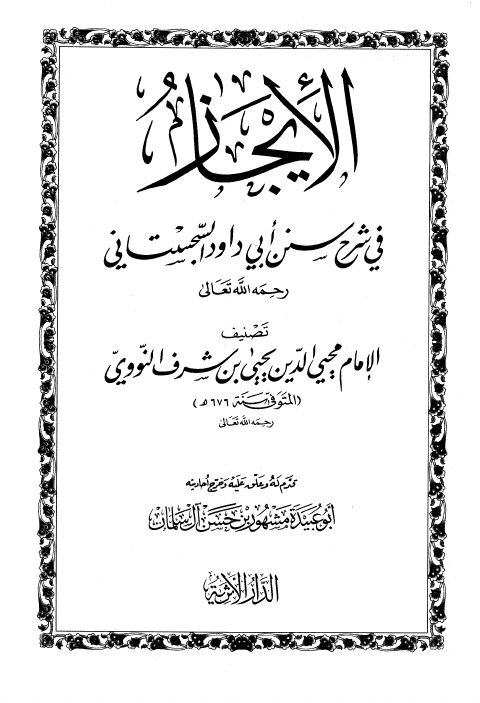
الإيجاز في شرح سنن أبي داود السجستاني الإيجاز في شرح سنن أبي داود السجستاني يحيى بن شرف النووي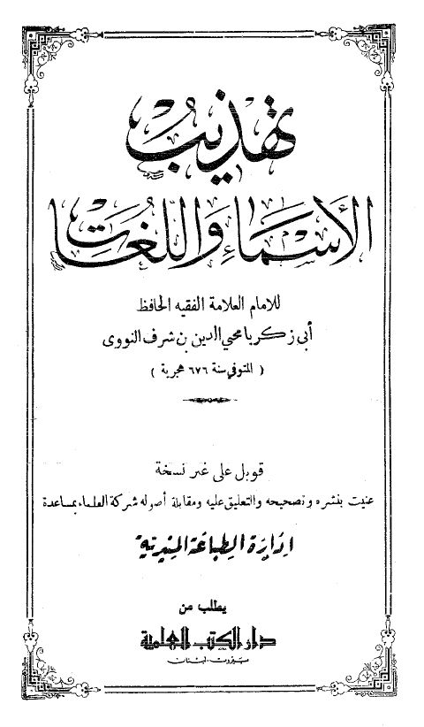
تهذيب الأسماء واللغات تهذيب الأسماء واللغات يحيى بن شرف النووي رياض الصالحين
رياض الصالحين
يحيى بن شرف النووي
رياض الصالحين
رياض الصالحين
يحيى بن شرف النووي
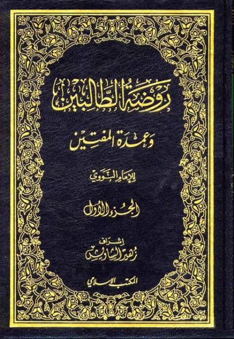
روضة الطالبين وعمدة المفتين روضة الطالبين وعمدة المفتين يحيى بن شرف النووي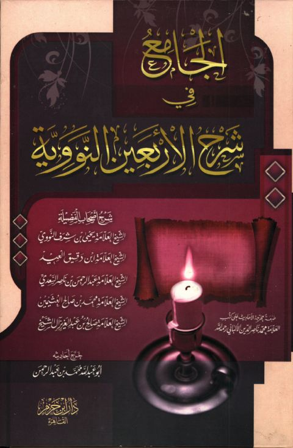
الجامع في شرح الأربعين النووية الجامع في شرح الأربعين النووية يحيى بن شرف النووي • ابن دقيق العيد • عبد الرحمن السعدي • محمد صالح العثيمين • صالح آل الشيخ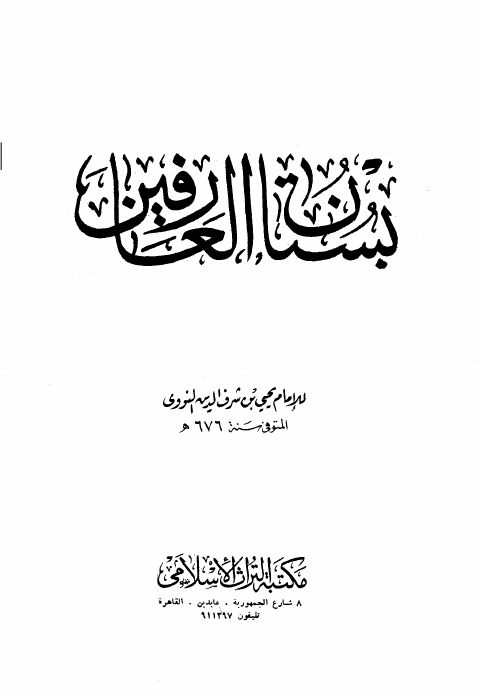
بستان العارفين- دار التراث بستان العارفين- دار التراث محيي الدين يحيى بن شرف النووي